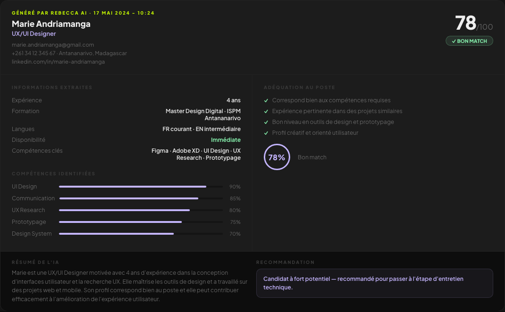
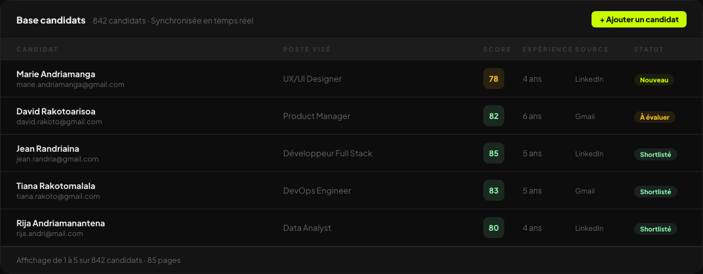

Preuve visuelle · Agent Rebecca


Vos équipes coulent sous l'administratif
- Candidatures qui s'accumulent plus vite que l'équipe ne peut trier
- Tri CV manuel, erreurs de classification, délais longs
- Excel, WhatsApp et emails dispersés — aucune vision centralisée
- Équipes épuisées par des tâches à faible valeur ajoutée
- Direction qui ne peut pas recruter immédiatement pour absorber la charge
Ce que vous récupérez concrètement
- 35 heures par semaine économisées — Agent Rebecca chez CEFORA
- +60 % de réactivité sur les candidatures entrantes
- -40 % de délai de traitement — pipeline RH fluidifié
- Équipes recentrées sur les tâches à valeur — entretiens, décisions, relation
Comment j'y réponds
Automatisation RH
Tri CV, scoring, classification — pipeline candidatures de bout en bout.
Expertise RH →Workflows administratifs
Classement documents, notifications, routage — tout process répétitif document-based.
Orchestration n8n →Notifications automatiques
Alertes équipe, emails candidats, mises à jour statut — zéro oubli.
Preuves en production
Agent Rebecca · CEFORA
35h/sem · +60 % réactivité · -40 % délai · agent IA CV en production.
Cas complet →CEFORA — contexte entreprise
7 commerciaux, 3 systèmes IA déployés — Rebecca + Maestro + prospection.
Parcours CEFORA →Comment on démarre — 4 étapes
RH, admin, classement — où part le temps de vos équipes ?
CV anonymisés, règles métier, volume hebdomadaire — baseline KPI.
Tests avec vos équipes, ajustements, mise en production.
Temps gagné, délais, réactivité — si on ne mesure pas, ce n'est pas fini.
FAQ
L'IA remplace-elle les recruteurs ?
Non. Elle trie et qualifie. L'humain décide et conduit les entretiens.
Volume minimum pour un ROI net ?
50 CV/semaine recommandé — en dessous, le gain existe mais le pilote doit être ciblé.
Données candidats sécurisées ?
Traitement conforme. Échantillons anonymisés en phase d'audit.
Au-delà du RH ?
Oui — tout process répétitif sur documents : factures, emails, classement dossiers.
Et si mon équipe commerciale est aussi surchargée ?
Voir Vendre plus efficacement — Maestro libère du temps selling.
Besoin d'un outil métier complet ?
Voir Digitaliser mon activité — plateforme sur mesure type Rentanoo.